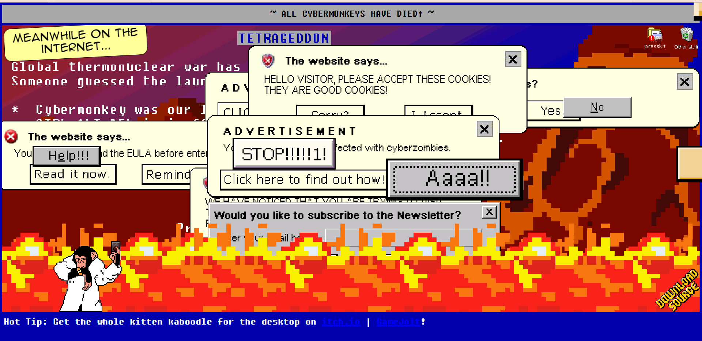

INTERACTIVE MEDIA - ASSIGNMENT 1
Chosen interactive experience: Tetrageddon - Nathalie Lawhead

1. What was the first thing you paid attention to when interacting with the experience?
The first thing that caught my attention as I entered the website is the website's use of the old window interface aesthetic. I felt like it was the first thing I paid attention to because it was a stark contrast to the modern interface that my laptop is using, hence I was focused right away on its design.
2. Spend two minutes with the experience and create a list of each of your discrete actions.
- Click the web link and open it up for the first time.
- The link leads to a glitching screen with a loading box.
- After loading, I got directed straight to the main interactive screen.
- Process what is happening on the screen and take in the information through the visuals.
- Hover my mouse over the "Click here to find out how!"" box.
- Clicked the box.
- Got transferred to a new tab where a fullscreen video starts playing a b/w video of a zombie apocalypse.
- A notification pop-up with an ok button appears at the same time.
- Read the pop-up.
- Clicked the ok button.
- Watch the video.
- Clicked the "act now" button in the middle of the screen.
- Got transferred to another tab.
- Another pop-up box with an ok button appears at the same time.
- Read the pop-up.
- Clicked the ok button.
- Watch the animation/moving graphics.
3. What part of the experience did you spend the most time engaging with?
I spent most of my time clicking on the interactive falling buttons that are presented to me and also reading notification pop-ups and clicking the ok button. As most buttons will most likely lead to the pop-up notification, I would then have to read the new information and click the ok button to dismiss the notification and continue. I focus a lot on clicking these buttons because they are the most prominent and repetitive element of the website, and as a new user, I would be curious whether they all have different effects to them.
4. What was the most common action in your two-minute interaction with the experience?
In my two-minute interaction with the experience, the most common action that I have performed is essentially clicking buttons. This implies to both the interactive buttons of the website itself and also the ok button that comes from the notification pop-ups.
5. What is your impression of the intended primary goal of the interactive experience?
I believe the intended primary goal of this interactive experience is to give their curious users the freedom to explore the depths of the experience's creativity. The website allows its users to experience the unexpected and the development of the interactive plot as they go through all available elements. The goal would be most effective when it comes to users who are not afraid of discovering new things as well as people that appreciate.
6. What is your impression of how the interactive experience communicates its primary goal?
For me, I feel like the interactive experience communicates its primary goal through the abundance of elements that is presented to its users. This is shown through the amount of button/boxes that is layered on top of each other, falling around and is sneak-peaking itself to the audience. This communication technique would appear effective as it builds up a sense of curiosity for its users, subtly pushing the users to test out all of the interactive elements to unpack the other layers under it.
7. What is your impression of how the experience should be interacted with over time? (For how long and how many different times)
As I've only went through the experience once, even so, I believe that this whole experience should/could be interacted with multiple times. Tetrageddon could definitely allow its user to dive into its content for however long they want to, that is if they are interested in the information is presented to them (etc: watching video, reading texts,…) And due to the many different buttons that is waiting to be interacted with, there are also different choices that you could make. This would further lengthen the experience and cause its user to keep interacting with it over time.
8. What is your impression of how the interactive experience communicates how it should be interacted with over time?
Tetrageddon communicates how it should be interacted with over time through the different prompts presented to its users as the experience proceed. These prompts varies as the different decisions made by the user triggers choices that shows the next steps of the experience. This would then be a helping guide for its user to continue communicate with the experience. I feel like this is a great way of leading its user to interact with the experience as it gives the user the choices to communicate with it differently over time.
9. What other media forms (digital or otherwise) does the experience reference?
The experience reference many other multi-media forms such as video, animated graphics, pictures and audio effects. They also include a game-like experience where you interact with the characters and does certain tasks to be able to proceed further.
10. What does this reference or references suggest to you about how you should act when engaging with it?
Depending on the references there will be different responses that hints to its user of how to act when engaging them. For certain, the videos or sound effects will autoplay by itself to ensure that the audience will be able to watch/hear them. Sometimes this would force us to act accordingly to the media form when engaging with it.
With the game-like section, there will be instructions and almost a guide on how to proceed with the experience through interactions with what is on the screen. This means they also suggest and aid us in the way of what we should do in situations as we are interacting with new elements.
11. What does this reference or references suggest to you about how you should feel when engaging with it?
I have realized that these references typically unites in the similar theme that is used across all media forms and information presented to its users. And for my personal experience with its contents, I feel like the references are trying to bring an eery, old school and scary vibes to its users. The users might also feel overwhelm at some point due to the maximalism of different effects and media that appeared on screen.
However, on the interactive side of these references, it gives me a sense of rising excitement every time I engage with a new media form that appeared. This is because most interactions comes to me unexpectedly, resulting in the rush of curiosity as I experience with the different medias.
12. What is the most frustrating element of the interaction to you and what makes it frustrating?
Personally, one of the most frustrating elements of the interaction to me is that sometimes you'd have to manually closes the tab that they have automatically opened up for you. It is frustrating because I feel like it is somehow out of place to actually having to move your mouse and click the x button to close the interactive tab and goes back to the main site. I think it could be better if there's a line or interactive element within the new tab that allow us to go back to the main site within the same tab as it is more united that way.
13. What is the most satisfying element of the interaction to you and what makes it satisfying?
For me, I've enjoyed its development in plot and interactions a lot and would call it most satisfying in the way they lead us from one interaction to another. What makes it satisfying is that they are very creative in the transitions and the new information/media that is presented to its users. I really like the way it is very interactive with the multi-media use and how they made almost everything on-screen available for use. The abundance of elements is also involved in this as it piques my interest in finding out more of what is left to experience.